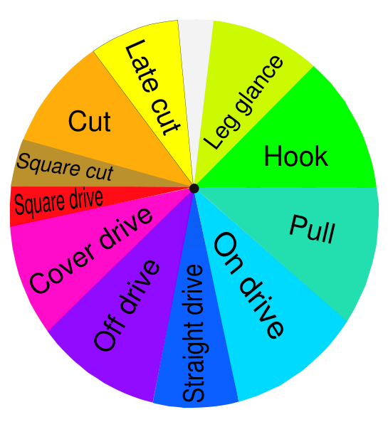

A cricket match is played between two teams of eleven players each on a grassy field, typically 137–150 metres (150–160 yd) in diameter.The Laws of Cricket do not specify the size or shape of the field but it is often oval.A cricket match is divided into periods called innings. During an innings (innings ends with 's' in both singular and plural form), one team fields and the other bats. The two teams switch between fielding and batting after each innings. All eleven members of the fielding team take the field, but only two members of the batting team (two batsmen) are on the field at any given time.
The key action takes place in the pitch, a rectangular strip in the centre of the field. The two batsmen face each other at opposite ends of the pitch. The fielding team's eleven members stand outside the pitch, spread out across the field.Behind each batsman is a target called a wicket. One designated member of the fielding team, called the bowler, is given a ball, and attempts to throw (bowl) the ball from one end of the pitch to the wicket behind the batsman on the other side of the pitch. The batsman tries to prevent the ball from hitting the wicket by striking the ball with a bat. If the bowler succeeds in hitting the wicket, or if the ball, after being struck by the batsman, is caught by the fielding team before it touches the ground, the batsman is dismissed. A dismissed batsman must leave the field, to be replaced by another batsman from the batting team.
If the batsman is successful in striking the ball and the ball isn't caught before it hits the ground, the two batsmen may then try to score points (runs) for their team by running across the pitch, switching positions. Each switch of positions is worth one run. The batsmen may attempt multiple runs or they may attempt no runs. By attempting runs, the batsmen risk dismissal, which can happen if the fielding team retrieves the ball and hits a wicket with the ball before a batsman has reached that end of the pitch.If the batsman hits the bowled ball over the field boundary without the ball touching the field, the batting team scores six runs and may not attempt more. If the ball touches the ground and then reaches the boundary, the batting team scores four runs and may not attempt more. When the batsmen have finished attempting their runs, the ball is returned to the bowler to be bowled again. The bowler continues to bowl toward the same wicket, regardless of any switch of the batsmen's positions.After a bowler has bowled six times (an over), another member of the fielding team is designated as the new bowler. The new bowler bowls to the opposite wicket, and play continues. Fielding team members may bowl multiple times during an innings, but may not bowl two overs in succession.The innings is complete when 10 of the 11 members of the batting team have been dismissed or a set number of overs has been played. The number of innings and the number of overs per innings vary depending on the match.
Objectives
The objective of each team is to score more runs than the other team and to completely dismiss the other team. In limited overs cricket, winning the game is achieved by scoring the most runs within the overs allowed, even if the opposition has not been completely dismissed. In Test cricket, it is necessary to score the most runs and dismiss the opposition twice in order to win the match, which would otherwise be drawn.
Pitch, wickets and creases
See also: Stump (cricket) and Bail (cricket)
The cricket
pitch dimensions
At either end of the pitch, 22 yards (20 m) apart, are placed the wickets. These serve as a target for the bowling (aka fielding) side and are defended by the batting side which seeks to accumulate runs. The pitch is 22 yards (20 m) or one chain in length between the wickets and is 10 feet (3.0 m) wide. It is a flat surface and has very short grass that tends to be worn away as the game progresses. The "condition" of the pitch has a significant bearing on the match and team tactics are always determined with the state of the pitch, both current and anticipated, as a deciding factor.
Each wicket consists of three wooden stumps placed in a straight line and surmounted by two wooden crosspieces called bails; the total height of the wicket including bails is 28.5 inches (720 mm) and the combined width of the three stumps is 9 inches (230 mm).Four lines, known as creases, are painted onto the pitch around the wicket areas to define the batsman's "safe territory" and to determine the limit of the bowler's approach. These are called the "popping" (or batting) crease, the bowling crease and two "return" creases.

The stumps are placed in line on the bowling creases and so these must be 22 yards (20 m) apart. A bowling crease is 8 feet 8 inches (2.64 m) long with the middle stump placed dead centre. The popping crease has the same length, is parallel to the bowling crease and is 4 feet (1.2 m) in front of the wicket. The return creases are perpendicular to the other two; they are adjoined to the ends of the popping crease and are drawn through the ends of the bowling crease to a length of at least 8 feet (2.4 m).When bowling the ball, the bowler's back foot in his "delivery stride" must land within the two return creases while his front foot must land on or behind the popping crease. If the bowler breaks this rule, the umpire calls "No ball".
The importance of the popping crease to the batsman is that it marks the limit of his safe territory for he can be stumped or run out (see Dismissals below) if the wicket is broken while he is "out of his ground".
Bat and ball
The essence of the sport is that a bowler delivers the ball from his end of the pitch towards the batsman who, armed with a bat is "on strike" at the other end.The bat is made of wood (usually White Willow) and has the shape of a blade topped by a cylindrical handle. The blade must not be more than 4.25 inches (108 mm) wide and the total length of the bat not more than 38 inches (970 mm).The ball is a hard leather-seamed spheroid with a circumference of 9 inches (230 mm). The hardness of the ball, which can be delivered at speeds of more than 90 miles per hour (140 km/h), is a matter for concern and batsmen wear protective clothing including pads (designed to protect the knees and shins), batting gloves for the hands, a helmet for the head and a box inside the trousers (to protect the crotch area). Some batsmen wear additional padding inside their shirts and trousers such as thigh pads, arm pads, rib protectors and shoulder pads.
Umpires and scorers
The game on the field is regulated by two umpires, one of whom stands behind the wicket at the bowler's end, the other in a position called "square leg", a position 15–20 metres to the side of the "on strike" batsman. When the bowler delivers the ball, the umpire at the wicket is between the bowler and the non-striker. The umpires confer if there is doubt about playing conditions and can postpone the match by taking the players off the field if necessary, for example rain or deterioration of the light.

An umpire
Off the field and in televised matches, there is often a third umpire who can make decisions on certain incidents with the aid of video evidence. The third umpire is mandatory under the playing conditions for Test matches and limited overs internationals played between two ICC full members. These matches also have a match referee whose job is to ensure that play is within the Laws of cricket and the spirit of the game.Off the field, the match details including runs and dismissals are recorded by two official scorers, one representing each team. The scorers are directed by the hand signals of an umpire. For example, the umpire raises a forefinger to signal that the batsman is out (has been dismissed); he raises both arms above his head if the batsman has hit the ball for six runs. The scorers are required by the Laws of cricket to record all runs scored, wickets taken and overs bowled. In practice, they accumulate much additional data such as bowling analyses and run rates.
Innings
The innings (ending with 's' in both singular and plural form) is the term used for the collective performance of the batting side.In theory, all eleven members of the batting side take a turn to bat but, for various reasons, an innings can end before they all do so.
Depending on the type of match being played, each team has one or two innings apiece. The term "innings" is also sometimes used to describe an individual batsman's contribution ("he played a fine innings").The main aim of the bowler, supported by his fielders, is to dismiss the batsman. A batsman when dismissed is said to be "out" and that means he must leave the field of play and be replaced by the next batsman on his team. When ten batsmen have been dismissed (i.e., are out), then the whole team is dismissed and the innings is over. The last batsman, the one who has not been dismissed, is not allowed to continue alone as there must always be two batsmen "in". This batsman is termed "not out".
An innings can end early for three reasons: because the batting side's captain has chosen to "declare" the innings closed (which is a tactical decision), or because the batting side has achieved its target and won the game, or because the game has ended prematurely due to bad weather or running out of time. In each of these cases the team's innings ends with two "not out" batsmen, unless the innings is declared closed at the fall of a wicket and the next batsman has not joined in the play.
In limited overs cricket, there might be two batsmen still "not out" when the last of the allotted overs has been bowled.
Overs
The bowler bowls the ball in sets of six deliveries (or "balls") and each set of six balls is called an over. This name came about because the umpire calls "Over!" when six balls have been bowled. At this point, another bowler is deployed at the other end, and the fielding side changes ends while the batsmen do not. A bowler cannot bowl two successive overs, although a bowler can bowl unchanged at the same end for several overs. The batsmen do not change ends and so the one who was non-striker is now the striker and vice-versa. The umpires also change positions so that the one who was at square leg now stands behind the wicket at the non-striker's end and vice-versa.
Team structure
A team consists of eleven players. Depending on his or her primary skills, a player may be classified as a specialist batsman or bowler. A well-balanced team usually has five or six specialist batsmen and four or five specialist bowlers. Teams nearly always include a specialist wicket-keeper because of the importance of this fielding position. Each team is headed by a captain who is responsible for making tactical decisions such as determining the batting order, the placement of fielders and the rotation of bowlers.A player who excels in both batting and bowling is known as an all-rounder. One who excels as a batsman and wicket-keeper is known as a "wicket-keeper/batsman", sometimes regarded as a type of all-rounder. True all-rounders are rare as most players focus on either batting or bowling skills.
Bowling
A typical bowling action
Sri Lankan bowler Muttiah Muralitharan, the highest wicket taker in both Test and ODI forms of cricket bowls to Adam Gilchrist.
The bowler reaches his delivery stride by means of a "run-up", although some bowlers with a very slow delivery take no more than a couple of steps before bowling. A fast bowler needs momentum and takes quite a long run-up, running very fast as he does so.The fastest bowlers can deliver the ball at a speed of over 90 miles per hour (140 km/h) and they sometimes rely on sheer speed to try and defeat the batsman, who is forced to react very quickly. Other fast bowlers rely on a mixture of speed and guile. Some fast bowlers make use of the seam of the ball so that it "curves" or "swings" in flight. This type of delivery can deceive a batsman into mistiming his shot so that the ball touches the edge of the bat and can then be "caught behind" by the wicketkeeper or a slip fielder.At the other end of the bowling scale is the "spinner" who bowls at a relatively slow pace and relies entirely on guile to deceive the batsman. A spinner will often "buy his wicket" by "tossing one up" (in a slower, higher parabolic path) to lure the batsman into making a poor shot. The batsman has to be very wary of such deliveries as they are often "flighted" or spun so that the ball will not behave quite as he expects and he could be "trapped" into getting himself out.In between the pacemen and the spinners are the "medium pacers" who rely on persistent accuracy to try and contain the rate of scoring and wear down the batsman's concentration.All bowlers are classified according to their looks or style. The classifications, as with much cricket terminology, can be very confusing. Hence, a bowler could be classified as LF, meaning he is a left arm fast bowler; or as LBG, meaning he is a right arm spin bowler who bowls deliveries that are called a "leg break" and a "Googly".During the bowling action the elbow may be held at any angle and may bend further, but may not straighten out. If the elbow straightens illegally then the square-leg umpire may call no-ball: this is known as "throwing" or "chucking", and can be difficult to detect. The current laws allow a bowler to straighten his arm 15 degrees or less.
Fielding
Fielding positions in cricket
for a right-handed
Batsman
All eleven players on the fielding side take the field together. One of them is the wicket-keeper aka "keeper" who operates behind the wicket being defended by the batsman on strike. Wicket-keeping is normally a specialist occupation and his primary job is to gather deliveries that the batsman does not hit, so that the batsmen cannot run byes. He wears special gloves (he is the only fielder allowed to do so), a box over the groin, and pads to cover his lower legs. Owing to his position directly behind the striker, the wicket-keeper has a good chance of getting a batsman out caught off a fine edge from the bat. He is the only player who can get a batsman out stumped.Apart from the one currently bowling, the other nine fielders are tactically deployed by the team captain in chosen positions around the field. These positions are not fixed but they are known by specific and sometimes colourful names such as "slip", "third man", "silly mid on" and "long leg". There are always many unprotected areas.
The captain is the most important member of the fielding side as he determines all the tactics including who should bowl (and how); and he is responsible for "setting the field", though usually in consultation with the bowler.In all forms of cricket, if a fielder gets injured or becomes ill during a match, a substitute is allowed to field instead of him. The substitute cannot bowl, act as a captain or keep wicket. The substitute leaves the field when the injured player is fit to return.
Batting
English cricketer W.G. Grace "taking guard" in 1883. His pads and bat are very similar to those used today. The gloves have evolved somewhat. Many modern players utilise more defensive equipment than was available to Grace, notably helmets and arm guards.
At any one time, there are two batsmen in the playing area. One takes station at the striker's end to defend the wicket as above and to score runs if possible. His partner, the non-striker, is at the end where the bowler is operating.Batsmen come in to bat in a batting order, decided by the team captain. The first two batsmen – the "openers" – usually face the hostile bowling from fresh fast bowlers with a new ball. The top batting positions are usually given to the most competent batsmen in the team, and the non-batsmen typically bat last. The pre-announced batting order is not mandatory and when a wicket falls any player who has not yet batted may be sent in next.If a batsman "retires" (usually due to injury) and cannot return, he is actually "not out" and his retirement does not count as a dismissal, though in effect he has been dismissed because his innings is over. Substitute batsmen are not allowed.A skilled batsman can use a wide array of "shots" or "strokes" in both defensive and attacking mode. The idea is to hit the ball to best effect with the flat surface of the bat's blade. If the ball touches the side of the bat it is called an "edge". Batsmen do not always seek to hit the ball as hard as possible, and a good player can score runs just by making a deft stroke with a turn of the wrists or by simply "blocking" the ball but directing it away from fielders so that he has time to take a run.There is a wide variety of shots played in cricket. The batsman's repertoire includes strokes named according to the style of swing and the direction aimed: e.g., "cut", "drive", "hook", "pull".Note that a batsman does not have to play a shot and can "leave" the ball to go through to the wicketkeeper, providing he thinks it will not hit his wicket. Equally, he does not have to attempt a run when he hits the ball with his bat. He can deliberately use his leg to block the ball and thereby "pad it away" but this is risky because of the leg before wicket rule.
In the event of an injured batsman being fit to bat but not to run, the umpires and the fielding captain may allow another member of the batting side to be a runner. The runner's only task is to run between the wickets instead of the injured batsman. The runner is required to wear and carry exactly the same equipment as the incapacitated batsman. It is possible for both batsmen to have runners.
Runs

The directions in which a right-handed batsman intends to send the ball when playing various cricketing shots. The diagram for a left-handed batsman is a mirror image of this one.
The primary concern of the batsman on strike (i.e., the "striker") is to prevent the ball hitting the wicket and secondarily to score runs by hitting the ball with his bat so that he and his partner have time to run from one end of the pitch to the other before the fielding side can return the ball. To register a run, both runners must touch the ground behind the crease with either their bats or their bodies (the batsmen carry their bats as they run). Each completed run increments the score.More than one run can be scored from a single hit; but, while hits worth one to three runs are common, the size of the field is such that it is usually difficult to run four or more. To compensate for this, hits that reach the boundary of the field are automatically awarded four runs if the ball touches the ground en route to the boundary or six runs if the ball clears the boundary on the full. The batsmen do not need to run if the ball reaches or crosses the boundary.
West Indian Brian Lara holds the record for highest score in both Tests and first-class cricket.
Hits for five are unusual and generally rely on the help of "overthrows" by a fielder returning the ball. If an odd number of runs is scored by the striker, the two batsmen have changed ends, and the one who was non-striker is now the striker. Only the striker can score individual runs, but all runs are added to the team's total.The decision to attempt a run is ideally made by the batsman who has the better view of the ball's progress, and this is communicated by calling: "yes", "no" and "wait" are often heard.Running is a calculated risk because if a fielder breaks the wicket with the ball while the nearest batsman is out of his ground (i.e., he does not have part of his body or bat in contact with the ground behind the popping crease), the batsman is run out.A team's score is reported in terms of the number of runs scored and the number of batsmen that have been dismissed. For example, if five batsmen are out and the team has scored 224 runs, they are said to have scored 224 for the loss of 5 wickets (commonly shortened to "224 for five" and written 224/5 or, in Australia, "five for 224" and 5/224).
Extras
Additional runs can be gained by the batting team as extras (called "sundries" in Australia) due to errors made by the fielding side. This is achieved in four ways:
-
No ball: a penalty of one extra that is conceded by the bowler if he breaks the rules of bowling either by (a) using an inappropriate arm action; (b) overstepping the popping crease; (c) having a foot outside the return crease. In addition, the bowler has to re-bowl the ball. In limited overs matches, a no ball is called if the bowling team's field setting fails to comply with the restrictions. In shorter formats of the game (20–20, ODI) the free hit rule has been introduced. The ball following a front foot no-ball will be a free-hit for the batsman, whereby he is safe from losing his wicket except for being run-out.
-
Wide: a penalty of one extra that is conceded by the bowler if he bowls so that the ball is out of the batsman's reach; as with a no ball, a wide must be re-bowled.
-
Bye: extra(s) awarded if the batsman misses the ball and it goes past the wicketkeeper to give the batsmen time to run in the conventional way (note that one mark of a good wicketkeeper is one who restricts the tally of byes to a minimum).
-
Leg bye: extra(s) awarded if the ball hits the batsman's body, but not his bat, while attempting a legitimate shot, and it goes away from the fielders to give the batsmen time to run in the conventional way.
When the bowler has bowled a no ball or a wide, his team incurs an additional penalty because that ball (i.e., delivery) has to be bowled again and hence the batting side has the opportunity to score more runs from this extra ball. The batsmen have to run (i.e., unless the ball goes to the boundary for four) to claim byes and leg byes but these only count towards the team total, not to the striker's individual total for which runs must be scored off the bat.
Dismissals (outs)
There are ten ways in which a batsman can be dismissed and some are so unusual that only a few instances of them exist in the whole history of the game. The common forms of dismissal are "bowled", "caught", "leg before wicket" (lbw), "run out", and "stumped". The unusual methods are "hit wicket", "hit the ball twice", "obstructed the field", "handled the ball" and "timed out".
Before the umpire will award a dismissal and declare the batsman to be out, a member of the fielding side (generally the bowler) must "appeal". This is invariably done by asking (or shouting) the term "Howzat?" which means, simply enough, "How is that?" If the umpire agrees with the appeal, he will raise a forefinger and say "Out!". Otherwise he will shake his head and say "Not out". Appeals are particularly loud when the circumstances of the claimed dismissal are unclear, as is always the case with lbw and often with run outs and stumpings.
-
Bowled: the bowler has hit the wicket with the ball and the wicket has "broken" with at least one bail being dislodged (note that if the ball hits the wicket without dislodging a bail it is not out).
-
Caught: the batsman has hit the ball with his bat, or with his hand which was holding the bat, and the ball has been caught before it has touched the ground by a member of the fielding side.
-
Leg before wicket (lbw): first and foremost, the ball must, in the opinion of the on-field umpire, be going on to hit the stumps if the ball had not hit the pad of the batsman first. If the batsman plays an attempted shot to the delivery, then the ball must hit the batsman's pad in line with the stumps and be going on to hit the stumps for the batsman to be given out. If the batsman does not attempt to play a shot, then the ball does not have to hit the pad in line with the stumps but it still must be going on to hit the stumps. If the ball pitches outside the leg stump, then the batsman cannot be given out under any circumstances.
-
Run out: a member of the fielding side has broken or "put down" the wicket with the ball while a batsman was out of his ground; this usually occurs by means of an accurate throw to the wicket while the batsmen are attempting a run, although a batsman can be given out Run out even when he is not attempting a run; he merely needs to be out of his ground.
-
Stumped is similar except that it is done by the wicketkeeper after the batsman has missed the bowled ball and has stepped out of his ground, and is not attempting a run.
-
Hit wicket: a batsman is out hit wicket, if he dislodges one or both bails with his bat, person, clothing or equipment in the act of receiving a ball, or in setting off for a run having just received a ball.
-
Hit the ball twice is very unusual and was introduced as a safety measure to counter dangerous play and protect the fielders. The batsman may legally play the ball a second time only to stop the ball hitting the wicket after he has already played it.
-
Obstructing the field: another unusual dismissal which tends to involve a batsman deliberately getting in the way of a fielder.
-
Handled the ball: a batsman must not deliberately touch the ball with his hand, for example to protect his wicket. Note that the batsman's hand or glove counts as part of the bat while the hand is holding the bat, so batsmen are frequently caught off their gloves.
-
Timed out usually means that the next batsman did not arrive at the wicket within three minutes of the previous one being dismissed.
In the vast majority of cases, it is the striker who is out when a dismissal occurs. If the non-striker is dismissed it is usually by being run out, but he could also be dismissed for obstructing the field, handling the ball or being timed out.
A batsman may leave the field without being dismissed. If injured or taken ill the batsman may temporarily retire, and be replaced by the next batsman. This is recorded as retired hurt or retired ill. The retiring batsman is not out, and may resume the innings later. An unimpaired batsman may retire, and this is treated as being dismissed retired out; no player is credited with the dismissal. Batsmen cannot be out bowled, caught, leg before wicket, stumped or hit wicket off a no ball. They cannot be out bowled, caught, leg before wicket, or hit the ball twice off a wide. Some of these modes of dismissal can occur without the bowler bowling a delivery. The batsman who is not on strike may be run out by the bowler if he leaves his crease before the bowler bowls, and a batsman can be out obstructing the field or retired out at any time. Timed out is, by its nature, a dismissal without a delivery. With all other modes of dismissal, only one batsman can be dismissed per ball bowled.
Innings closed
An innings is closed when:
-
Ten of the eleven batsmen are out (have been dismissed); in this case, the team is said to be "all out"
-
The team has only one batsman left who can bat, one or more of the remaining players being unavailable owing to injury, illness or absence; again, the team is said to be "all out"
-
The team batting last reaches the score required to win the match
-
The predetermined number of overs has been bowled (in a one-day match only, commonly 50 overs; or 20 in Twenty20)
-
A captain declares his team's innings closed while at least two of his batsmen are not out (this does not apply in one-day limited over matches)
Results
If the team that bats last is all out having scored fewer runs than
their opponents, the team is said to have "lost by n runs" (where n is
the difference between the number of runs scored by the teams). If the
team that bats last scores enough runs to win, it is said to have "won
by n wickets", where n is the number of wickets left to fall. For
instance a team that passes its opponents' score having only lost six
wickets would have won "by four wickets".In a two-innings-a-side match,
one team's combined first and second innings total may be less than the
other side's first innings total. The team with the greater score is
then said to have won by an innings and n runs, and does not need to bat
again: n is the difference between the two teams' aggregate scores.
If the team
batting last is all out, and both sides have scored the same number of
runs, then the match is a tie;
this result is quite rare in matches of two innings a side. In the
traditional form of the game, if the time allotted for the match expires
before either side can win, then the game is declared a draw.
If the match has only a single innings per side, then a maximum number of deliveries for each innings is often imposed. Such a match is called a "limited overs" or "one-day" match, and the side scoring more runs wins regardless of the number of wickets lost, so that a draw cannot occur. If this kind of match is temporarily interrupted by bad weather, then a complex mathematical formula, known as the Duckworth-Lewis method after its developers, is often used to recalculate a new target score. A one-day match can also be declared a "no-result" if fewer than a previously agreed number of overs have been bowled by either team, in circumstances that make normal resumption of play impossible; for example, wet weather.